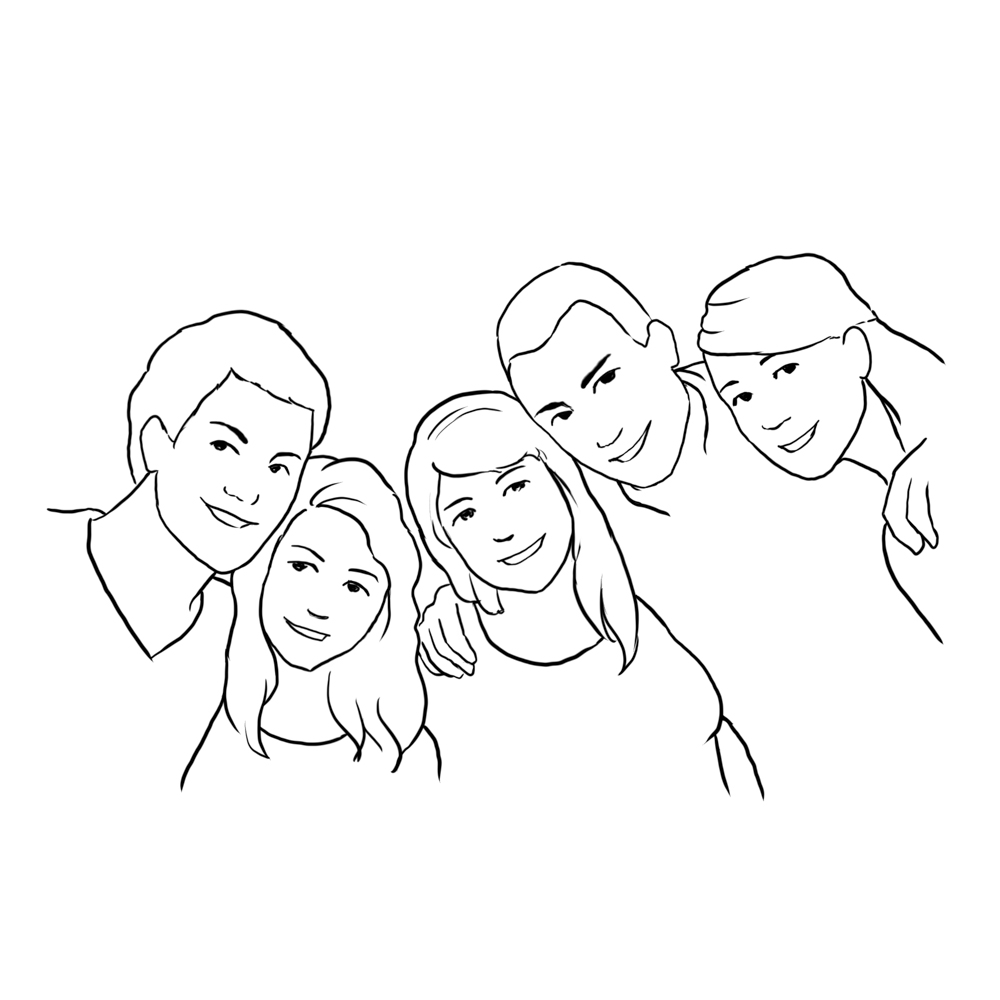

<nav class="chat-header fixed-top" routerLink="/Chat-details">
    <div>
        <i *ngIf="currentBody=='chat'" class="fa fa-chevron-left" routerLink="/Home"></i>
        
        <i *ngIf="currentBody=='details'" class="fa fa-chevron-left" routerLink="/Chat"></i>
    </div>
    <div class="w-100 d-flex justify-content-center">
        <span>Room No 111</span>
    </div>
</nav>
